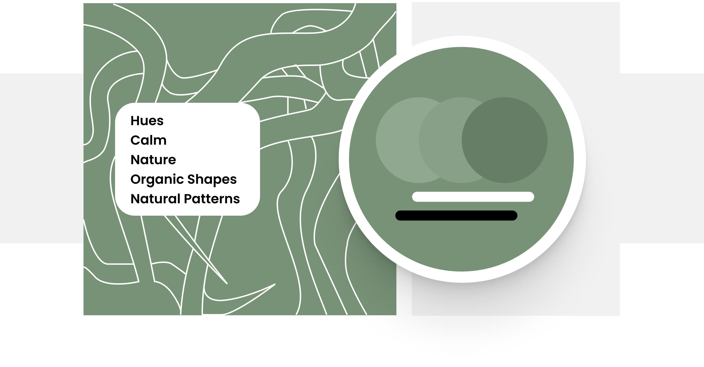
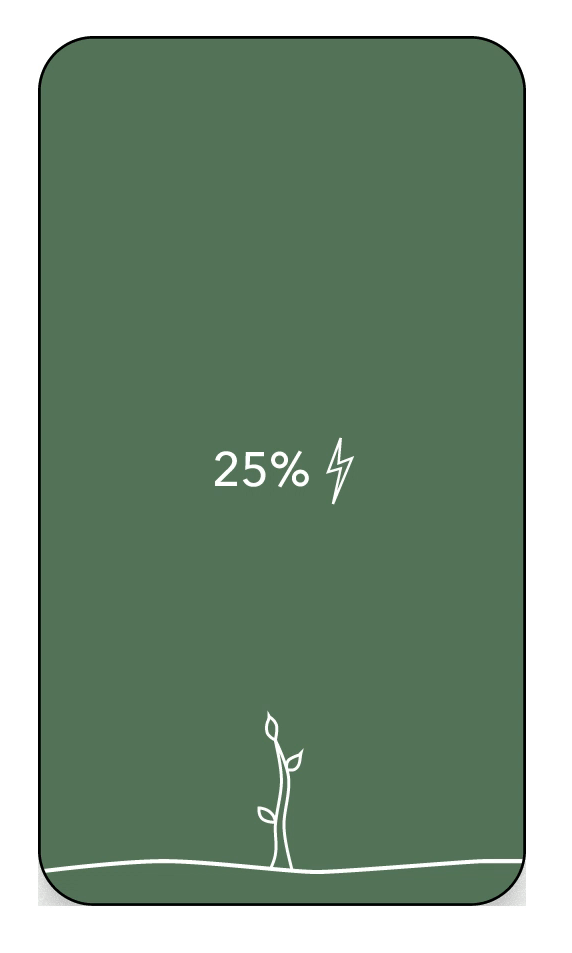
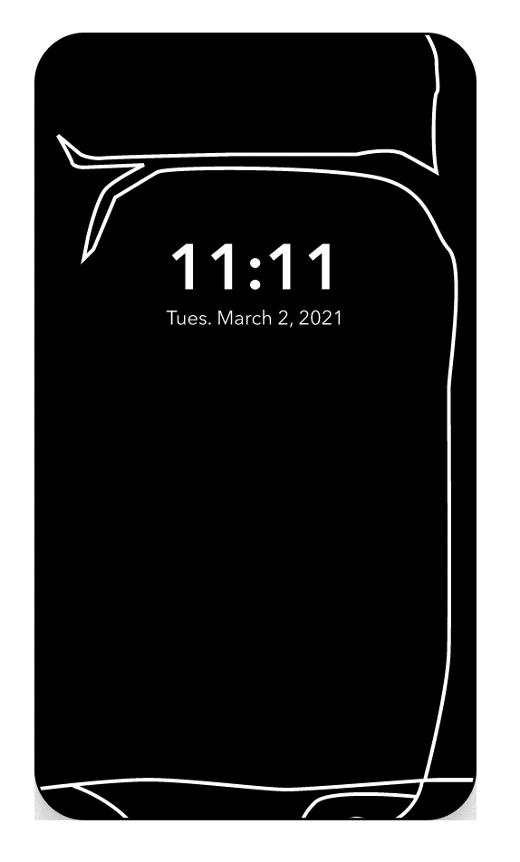
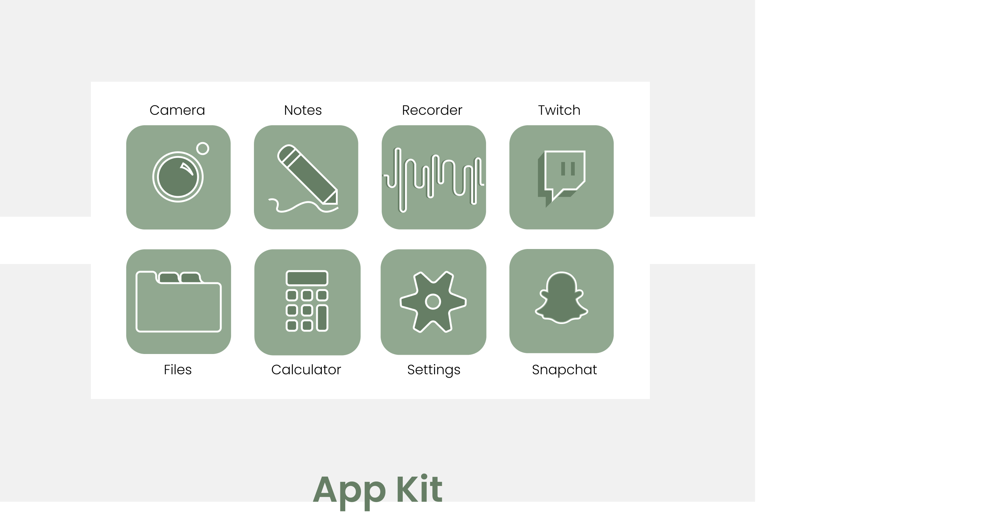
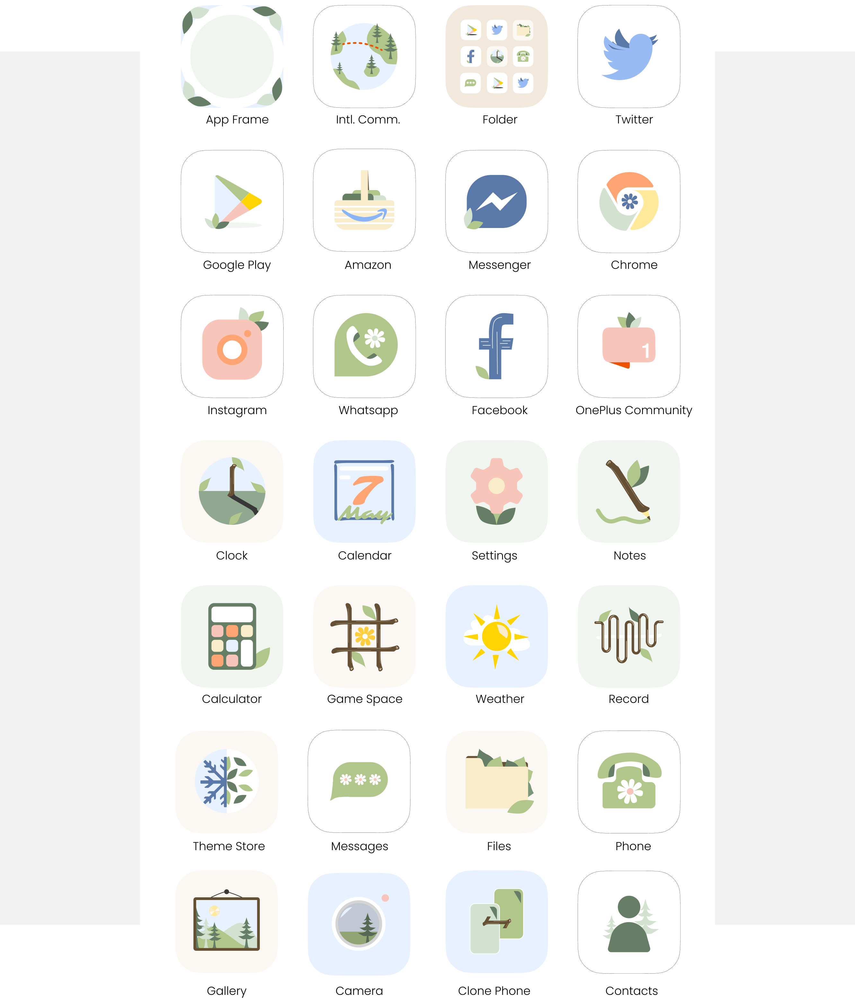

isabelanguera2@gmail.com
(434) 907-2508
The Project
Design a lockscreen, app kit, and charging animation for OnePlus, creating the key screens of a themed interface for the release of OnePlus’s theme store.
The Collaboration
This project started as an assignment for a class that was sponsored by OnePlus. From that assignment I was asked to further develop my idea, working with a UX Designer at the company, to be incorporated as a promotional theme in their newly released theme store.
Part I: The Assignment
I started what became this project by making a moodboard and ‘stylesheet,’ and then drafting the mockups.
In the moodboard I found images and textures of natural patterns, organic shapes, northern European design, and comforting, neutral colors.
In the stylesheet, I wrote feelings I wished to convey in my design, neutral colors, and differing hues.
The charging animation mimics a growing tree--the mock below shows the screen at 25%. 50%, and 75% charged. As the phone charges, the tree sprouts and grows to its full size.
The wallpaper fades in and uses neutral colors, in this case green, with hues layered through different elements. The background is patterned like the roots of a tree.
The app kit is designed using one main color, again using different hues. The icons are simple shapes, and often organic.
Part II: The Development
When working with the UX Designer at OnePlus, I focused mainly on expanding on and redesigning the app kit. OnePlus went a different direction with the homescreen, though kept in tune with the same concept.
The first run through, I brought more natural elements into the icons themselves.
The second run through, we talked about bringing more color into the app kit, so we went for more pastel, but still natural, colors.
Part III: The Final Product
From the original assignment, to the edited app kit, the final product, released by OnePlus is the following. While it splits quite a bit from my original intent, the idea remains and has been translated in a different way.
Until its release, I cannot show the final outcome of this project. As soon as it is available, I will add it here!
Takeaways
This idea allowed me to work with pivoting an initial concept to something different. While maintaining the same emotional values and intended feel from my initial mockups, the turns we took as this idea developed were fun and something that I would not have arrived at without the extended collaboration with OnePlus.
isabelanguera2@gmail.com
(434) 907-2508